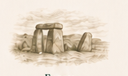
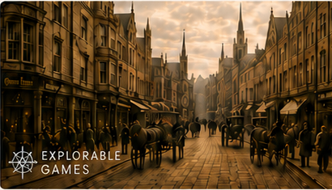
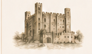
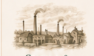
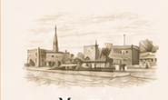

★ Featured Experience
Step into Northampton in 1885
Travel back in time and explore the streets of Victorian Northampton through an immersive digital walkthrough created by Explorable Games.
Explore the Northamptonshire Timeline
— ✦ —
Journey through Northamptonshire’s story, from its earliest beginnings to the county we know today.
Early
— ✦ —
Medieval
— ✦ —
Georgian &
Victorian
— ✦ —
Modern
Northamptonshire
— ✦ —What’s On
— ✦ —
Delapré Abbey Exhibition24 May • 10:00 am
Delapré Abbey, Northampton
Nene Valley Railway Gala17 May • 11:00 am
Wansford Station
Northamptonshire’s
History Starts with You
— ✦ —
Join a welcoming community of local history enthusiasts preserving and sharing our county’s heritage.
Join NHNFrom Our
Facebook Community
— ✦ —
- ▣Old PhotographsShare and discover historic images.
- ▦Events & TalksSee what’s happening across the county.
- ?Questions & DiscoveriesAsk, learn and share your knowledge.
Archives & Research
Discover documents, records and collections that bring Northamptonshire’s history to life.